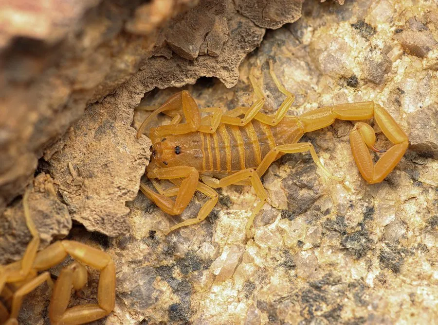

蛛形动物 · 动物界
亚利桑那树皮蝎 Centruroides sculpturatus

美国西南部的小型蝎子，体色淡黄，尾节细长，毒性较强，被蜇后疼痛剧烈，是美国毒性最强的蝎子之一。
- 分类
- 门节肢动物门纲蛛形纲目蝎目科钳蝎科属刺尾蝎属
- 栖息环境
- 干旱灌丛和荒漠，藏在树皮、石块、墙缝和杂物下
- 地理分布
- 美国亚利桑那州、新墨西哥州和墨西哥北部
- 保护级别
- IUCN 暂无评估；美国部分地区限制捕捉
物种志
亚利桑那树皮蝎体长 5–7 cm，体色淡黄至浅褐，身体较扁平，尾节细长，螯足相对纤细；它常藏在树皮、石块、墙缝和杂物下，夜间出来活动，行动迅速。
它分布于美国亚利桑那州、新墨西哥州以及墨西哥北部的干旱灌丛和荒漠，栖息于树皮下、石缝和人类居所附近，捕食昆虫、蜘蛛和小型无脊椎动物。亚利桑那树皮蝎毒性较强，毒液含神经毒素，被蜇后局部剧痛，儿童和过敏体质者可能出现严重症状，需及时就医。它不主动攻击人，但常躲进鞋子、衣物和墙角，因此在该地区要抖一抖鞋袜再穿；它尾节上的毒针呈深色。雌蝎会背着幼蝎生活一段时间。目前 IUCN 暂无评估，美国部分地区对其捕捉有管理限制。
形态与习性
- 食性昆虫、蜘蛛和小型无脊椎动物
- 体长5–7 cm
- 识别体色淡黄，身体扁平，尾节细长
- 习性夜行性，常藏在树皮和墙缝中
- 毒性毒性较强，被蜇后剧痛，儿童风险较高
- 繁殖雌蝎背着幼蝎生活一段时间
趣味知识
- 亚利桑那树皮蝎是美国毒性最强的蝎子之一，但体型只有几厘米。
- 它喜欢躲在树皮和墙缝里，有时会钻进鞋子或衣物。
- 在当地穿鞋前先抖一抖，是防范树皮蝎的常用办法。